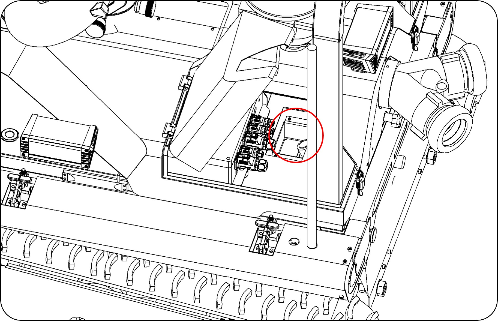
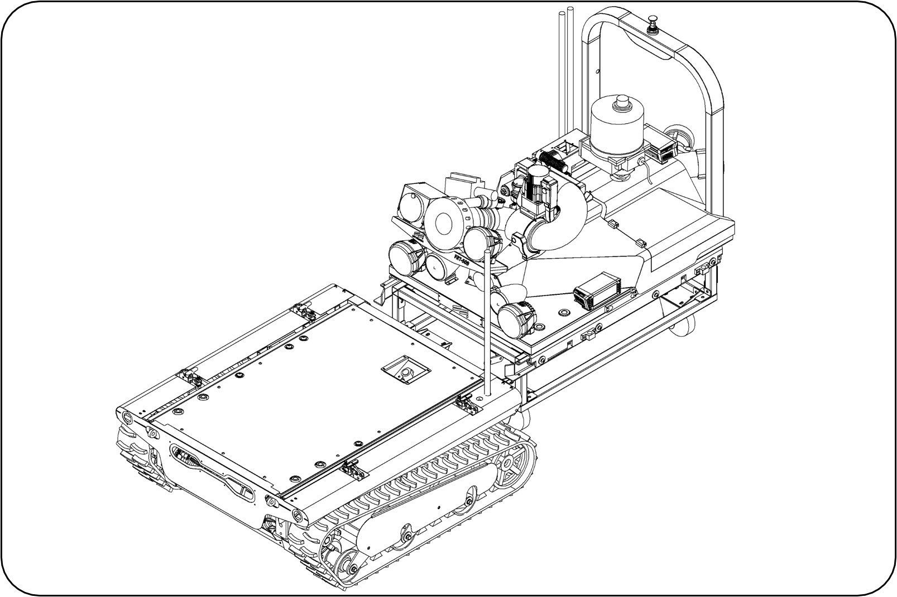
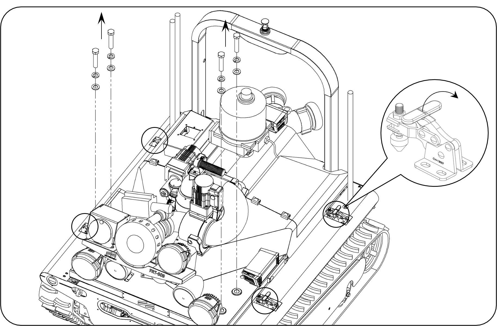
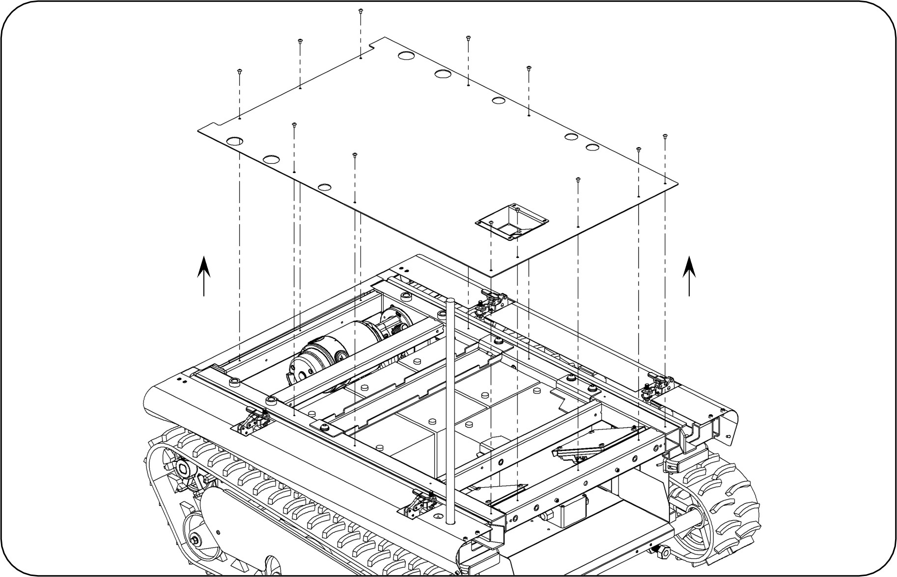
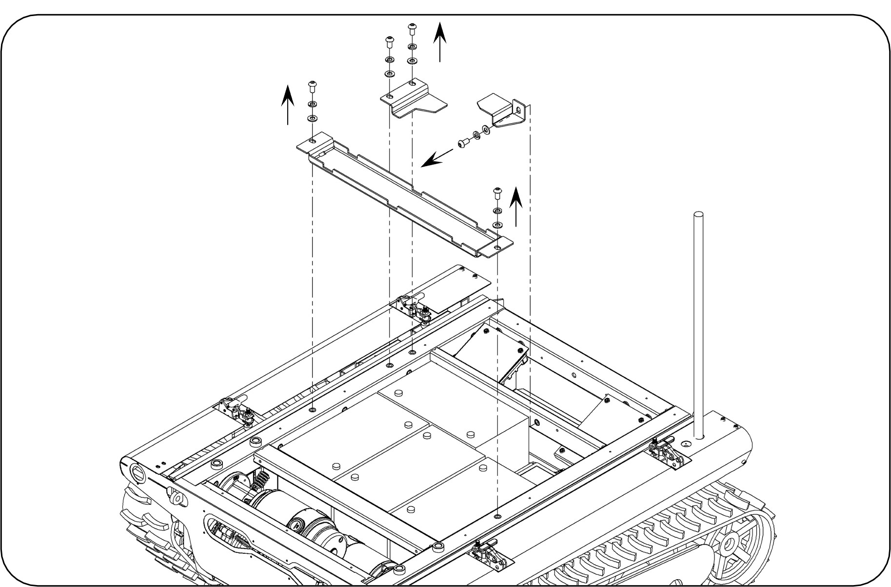
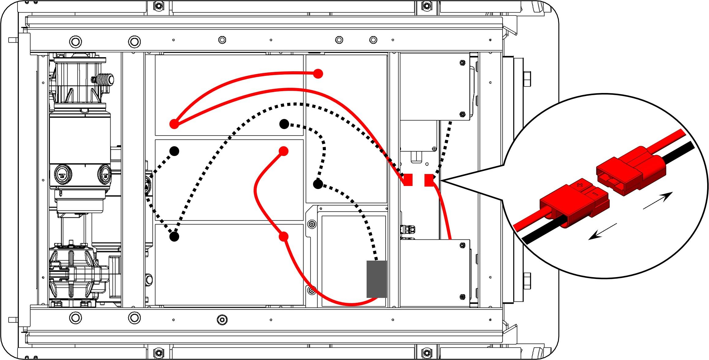
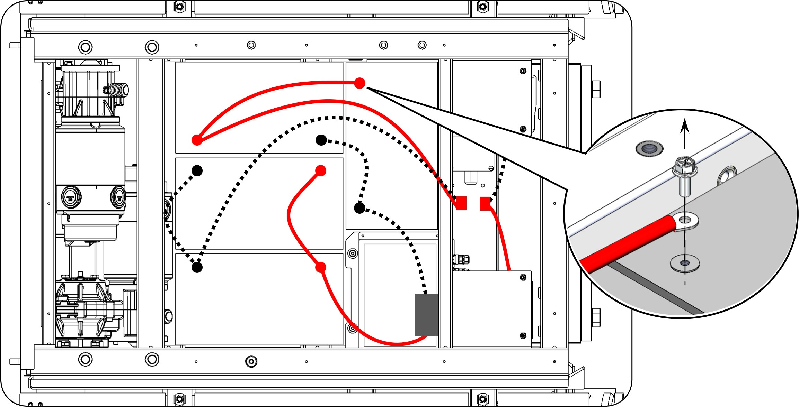
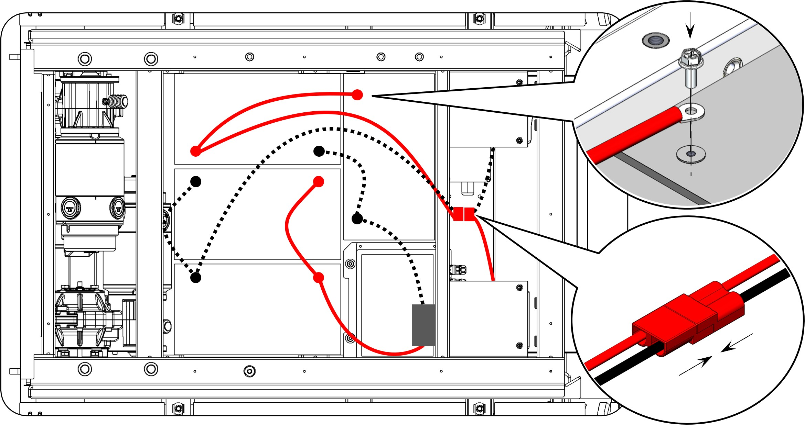
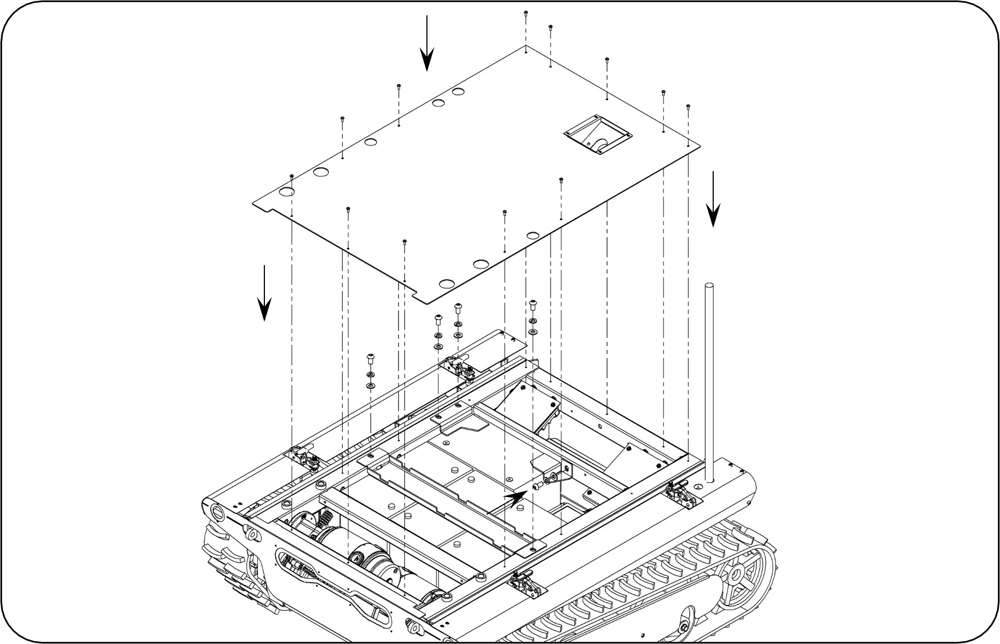
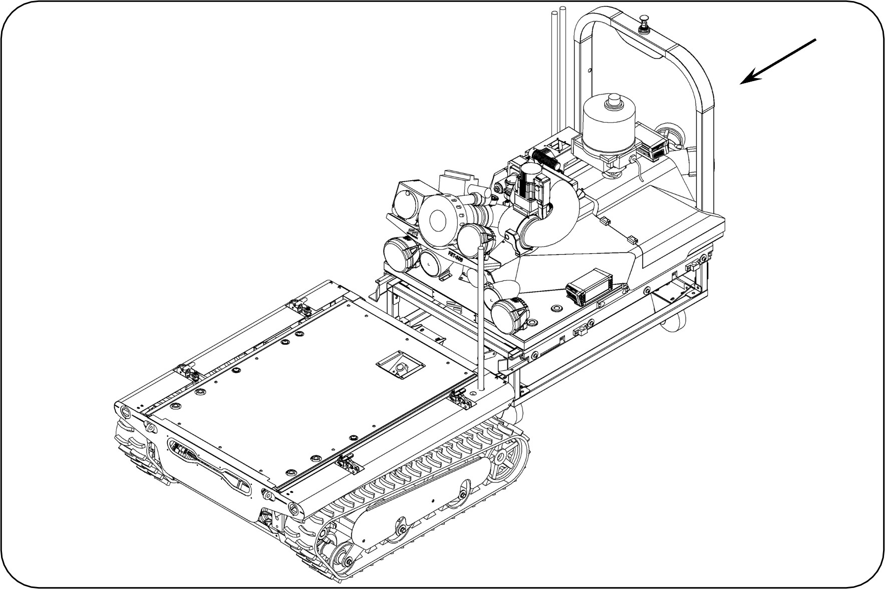

| 項目 | 品名 / 料號 | 數量 |
|---|---|---|
| 特殊工具 | 油壓台車 | 1 |
| 一般工具 | 24號套筒、十字起子、六角板手組 | - |
| 零組件 | 鉛酸電池 KPH100-12AN (392060002) | 4 個 |
| 耗材 | 藍膠、熱熔膠 | 適量 |

圖 1：線路收納位置

圖 2：台車放置位置

圖 3：固定螺絲與夾具位置

圖 4：上座移至台車示意

圖 5：底板螺絲位置

圖 6：電池壓條拆卸

圖 7：電池端子拆卸

圖 8：新電池放置

圖 9：螺栓塗抹藍膠

圖 10：復原鎖固確認